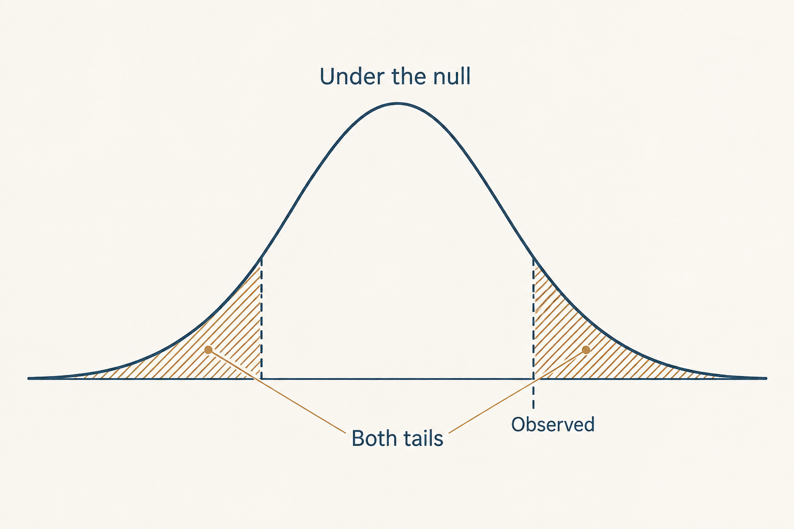
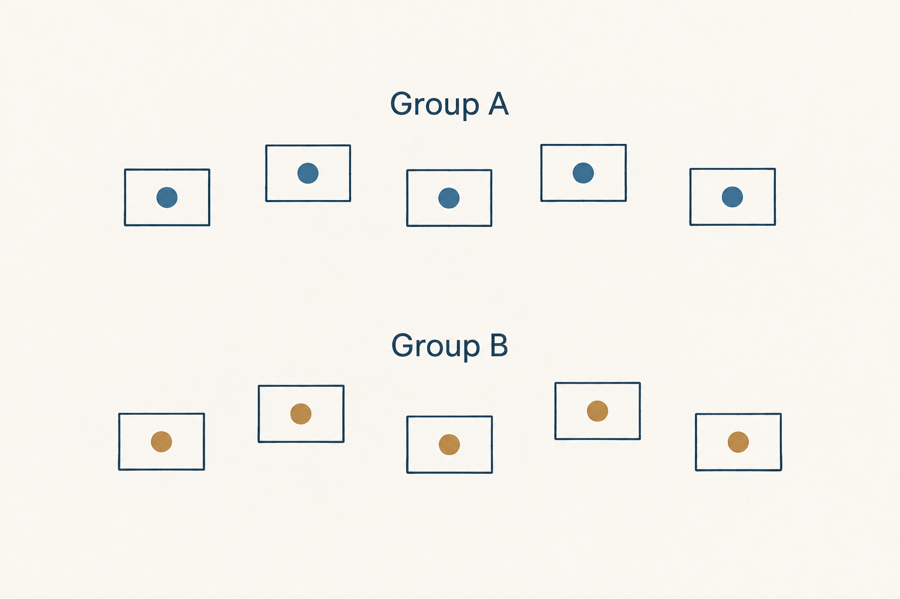
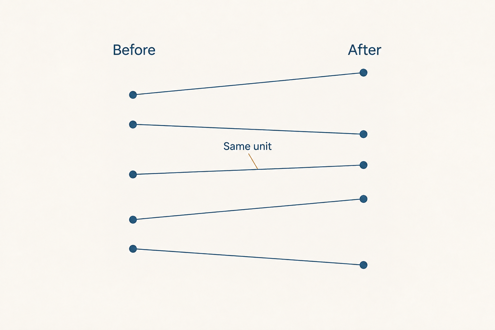

Course image previews
Lessons 1–5 · One idea per image, with a shared paper-and-ink style. These are schematic concept illustrations. Open an image to inspect it at full size.

1 · A two-sided p-value
Under the assumed null model, both equally extreme tails contribute to the two-sided p-value. Schematic illustration.

2 · Power and detection
For a specified alternative and testing procedure, outcomes beyond the decision boundary are detections; the remaining outcomes are misses. One-sided schematic.

3 · A mean interval and a benchmark
The interval describes uncertainty about the population mean, not the spread of individual ages. This schematic shows an interval entirely above a teaching benchmark.

4 · Independent groups
Each record belongs to one comparison group. Group labels do not create pairing. Schematic records.

5 · Paired measurements
Each line connects two measurements from the same unit. The paired analysis studies within-unit change. Schematic records, not the eleven observed firms.